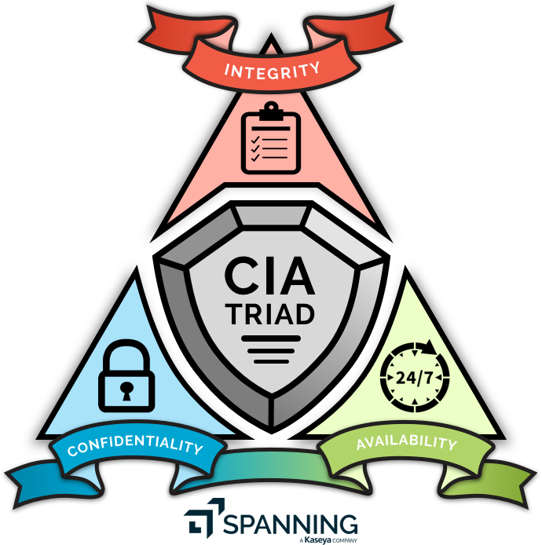

| CIA triangle (confidentiality, integrity and availability)
Is a model designed to guide policies for information security within an organization. The model is also sometimes referred to as the AIC triad (availability, integrity and confidentiality) to avoid confusion with the Central Intelligence Agency. The elements of the triad are three of the most foundational and crucial cybersecurity needs.

- Confidentiality: Confidentiality measures are designed to prevent sensitive information from unauthorized access attempts, in other words, if I want to share data, I should be able to do that and if I don’t want to share data, I shouldn’t be able to.
- Integrity: Involves maintaining the consistency, accuracy and trustworthiness of data over its entire lifecycle. Data must not be changed in transit, and steps must be taken to ensure data cannot be altered by unauthorized people, or in other words, when I send data to someone, I want to make sure that date is the original one.
- Availability: Means information should be consistently and readily accessible for authorized parties, or in other words, if I want to access the data now, I should be able to, and if I want to access it tomorrow, I should be able to.
- Source: techtarget
- Wrote: December 4, 2022 | Azar 13, 1401
- Updated:
- Posted: December 4, 2022 | Azar 13, 1401